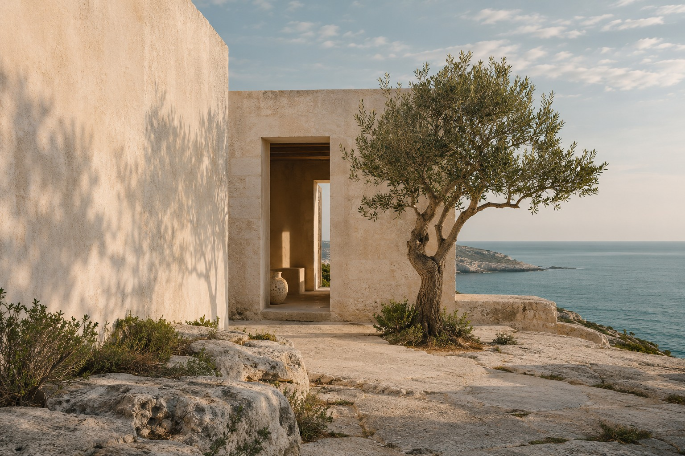

住下来之前，
先慢慢了解。

一处想象中的居所，一份把信息说清楚的入住说明。
什么时候可以入住？
演示规则：下午三点后抵达，上午十一点前离开。实际服务需要以经营方说明为准。
如果计划改变了呢？
这里展示说明如何展开；没有产生预订、付款或取消记录。
可以带宠物一起吗？
这是一处虚构场景。真实项目应把可携带范围、额外安排与联系入口写清楚。
关于提前抵达补充提示应短小；关键规则始终放在正文中。

一处想象中的居所，一份把信息说清楚的入住说明。
演示规则：下午三点后抵达，上午十一点前离开。实际服务需要以经营方说明为准。
这里展示说明如何展开；没有产生预订、付款或取消记录。
这是一处虚构场景。真实项目应把可携带范围、额外安排与联系入口写清楚。